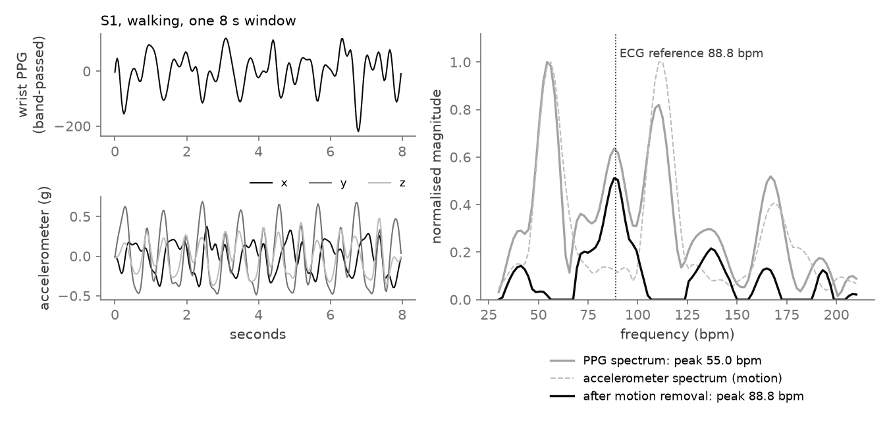
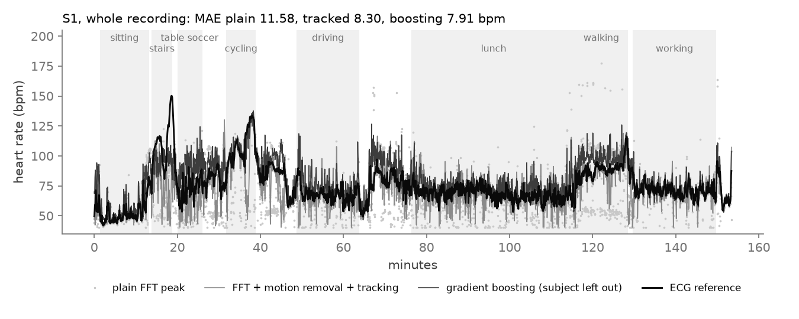

An FFT method that uses the accelerometer to remove motion, plus gradient boosting and a small 1D CNN, each tested on people it never saw, on the public PPG-DaLiA dataset and against the published Deep PPG results.
Smartwatches read heart rate by shining light into the wrist (photoplethysmography, PPG). At rest this works well. When the arm moves, blood and sensor move too, and the motion rhythm often shows up in the spectrum stronger than the heartbeat. An arm swing of about 55 cycles per minute can then be read as a heart rate of 55 bpm.
A 3-axis accelerometer that sees the motion directly. If a peak in the PPG spectrum is also in the accelerometer spectrum, it is probably motion, not pulse.
How much that helps, per activity, on people the method was not tuned on, and how it compares with the published numbers on the same data.
PPG-DaLiA: 15 people wearing a wrist sensor through sitting, stairs, table soccer, cycling, driving, lunch, walking and work.
Heart rate from manually corrected chest-ECG R-peaks, one value per 8-second window.
A medical device or a clinical claim. It is a measured comparison of methods on open data.
Each subject file is 0.8 to 1.6 GB, mostly chest signals at 700 Hz. A lean unpickler skips them, so peak memory stays near 240 MB, and the wrist signals are cut into 8-second windows every 2 seconds.
Band-pass 0.5–4 Hz, Hann-windowed FFT of the PPG and each accelerometer axis. The motion spectrum is subtracted, weighted by how much the wrist moves, and the heart rate is the interpolated peak.
Heart rate cannot jump 40 bpm in two seconds. The tracker looks for the peak within 15 bpm of the previous estimate, using past windows only and no labels.
Gradient boosting on 20 of 91 spectral and motion features, picked inside each fold, and a 22,785-parameter 1D CNN on the spectra. Every method is scored leave-one-subject-out.
Windows overlap by 75%, so a window split would leak.
The plain FFT shows what each step adds.
Stored with their table numbers, so the comparison can be checked.
Mean absolute error in beats per minute, mean of the 15 subjects. Lower is better.
MAE in bpm, bar length to 40 bpm.
MAE in bpm, bar length to 20 bpm. Closest published counterpart for each method.
| Method | MAE (bpm) | Worst activity |
|---|---|---|
| Plain FFT peak (baseline) | 17.24 ± 7.84 | stairs 36.16 |
| FFT + accelerometer motion removal | 16.37 ± 5.79 | stairs 28.27 |
| FFT + motion removal + tracking | 12.15 ± 5.82 | cycling 24.80 |
| Gradient boosting, 20 features | 8.29 ± 3.88 | stairs 15.04 |
| 1D CNN on spectra | 12.43 ± 5.94 | cycling 25.72 |
| MATLAB R2026b vs Python, FFT core | 1e-10 | max difference in bpm, 20 windows |

src/spectral.py. The arm swing puts the biggest PPG peak at 55.0 bpm; subtracting the accelerometer spectrum leaves 88.8 bpm against an ECG reference of 88.8. Picked as a clear example; on average, motion removal alone helps only a little.
results/predictions.csv.gz. The plain FFT drops to the arm-swing rate during walking and stairs; gradient boosting, trained without S1, follows the reference most closely (MAE 7.91 bpm). Drawn by scripts/make_demo_figures.py.The dataset readme says 1/64 g, but that is for the raw CSV; the pickles are already in g. The first extraction divided again. It was fixed in the extractor, and older files are corrected on load.
Sitting goes from 2.73 to 4.06 bpm: subtracting a near-silent accelerometer spectrum removes part of the real pulse peak. The motion weight limits this but does not remove it.
The first run took 99 seconds per fold. The final one is 3 epochs on every second window, one seed, 400 seconds in total, and it is weaker than gradient boosting, especially on cycling and sitting.
S5 is the worst subject for every method, as in the paper. Cycling defeats the spectral tracker (27.90 to 24.80) even though the wrist moves a lot; the reason is not yet known.
The four spectral settings were hand-picked on 3 of the 15 subjects, not nested, so the FFT rows are slightly optimistic for them. The CNN is untuned. Differences of about 1 bpm between rows should not be read as real.
Nested tuning of the spectral settings, a longer CNN run with a small ensemble, a per-window quality flag so a watch can report no reading instead of a wrong one, and a look at why tracking fails on cycling.
git clone https://github.com/dheepakkaran/wearable-ppg-motion-artifacts.git cd wearable-ppg-motion-artifacts make reproduce # env, PPG-DaLiA (2.7 GB), windows, tests, features, evaluate, Octave check make test # 5 checks: motion removal on a synthetic pulse, subject split uv run --with matplotlib --with numpy --with scipy --with pandas \ python scripts/make_demo_figures.py